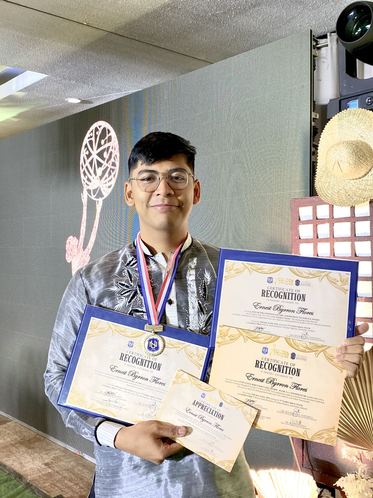
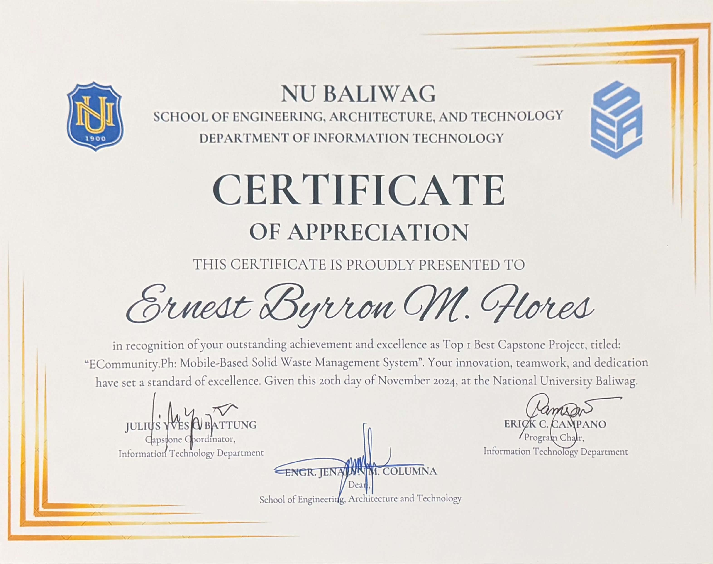
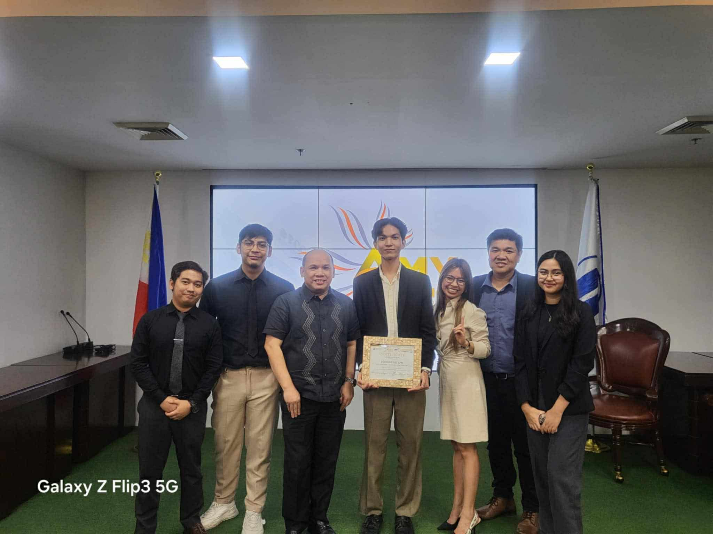
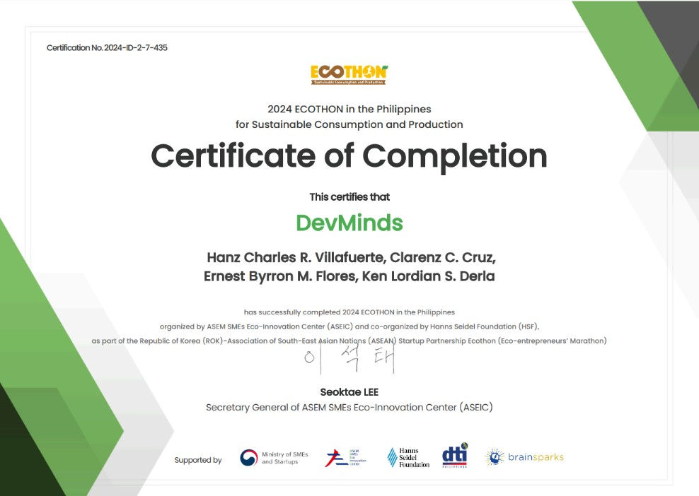
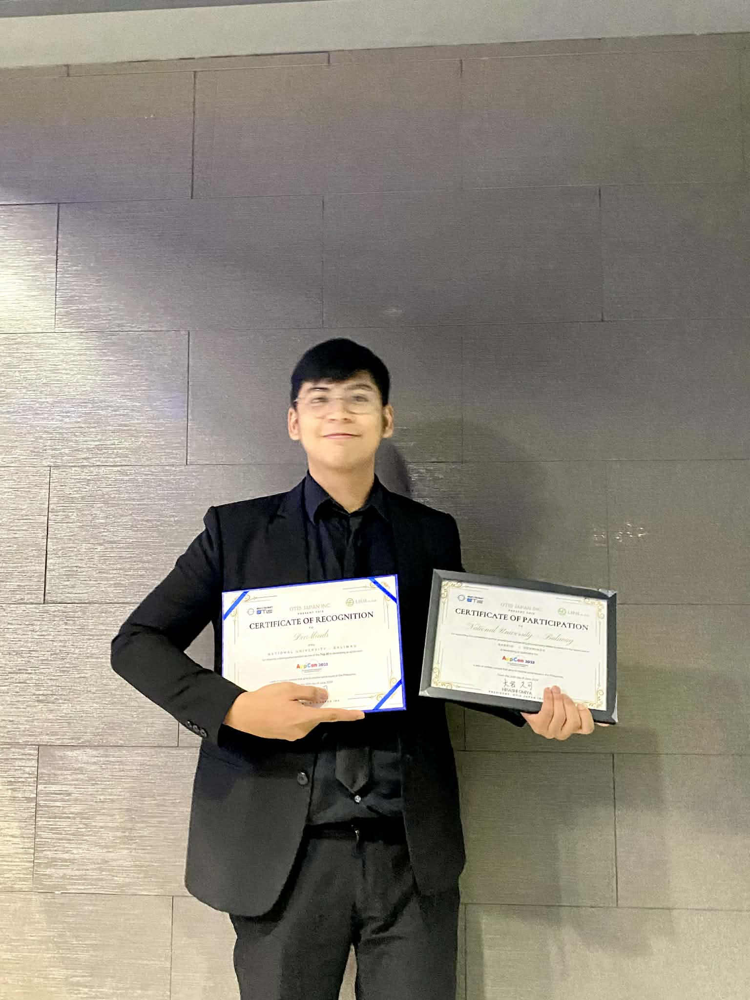
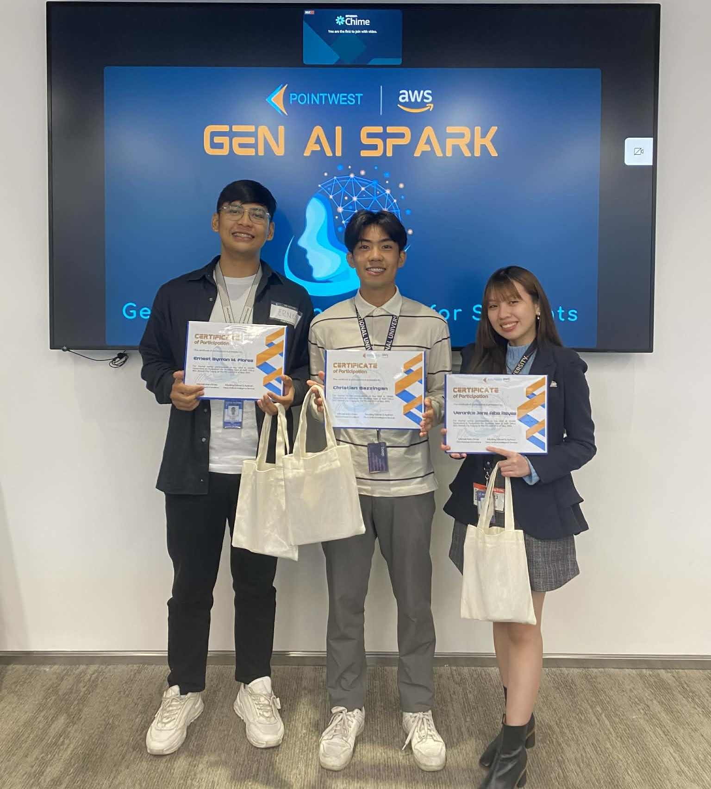
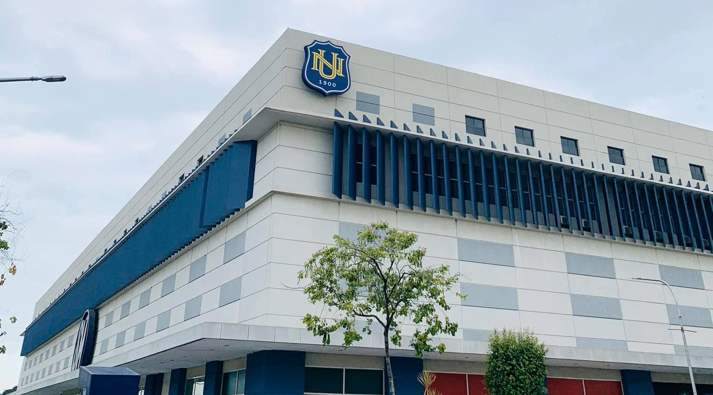
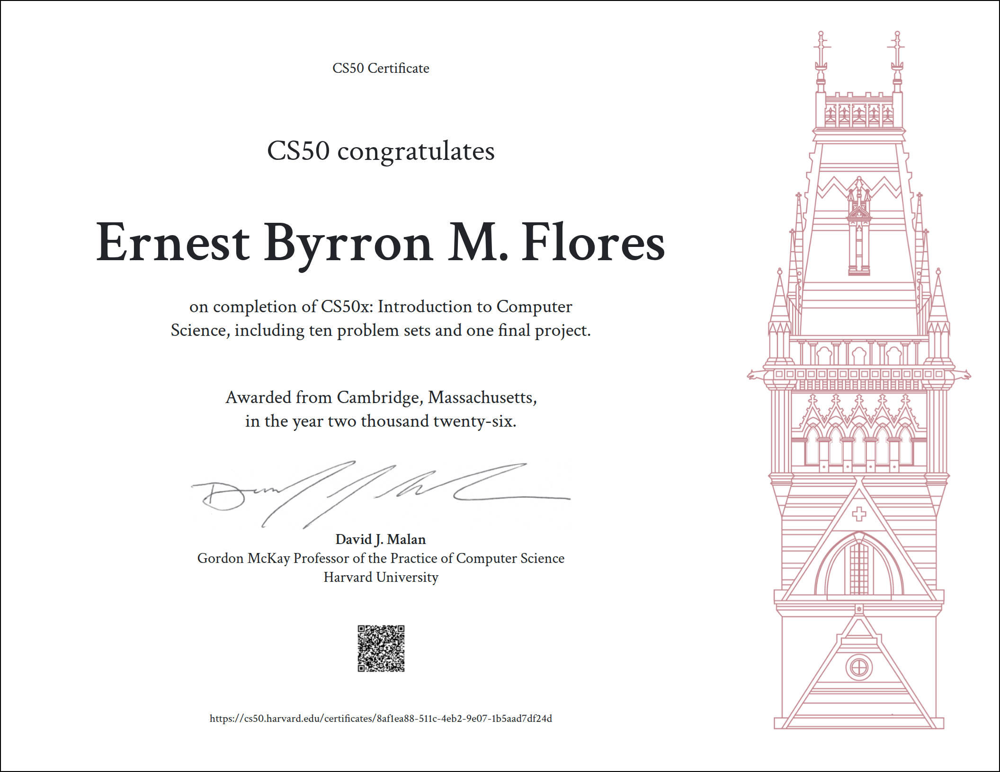
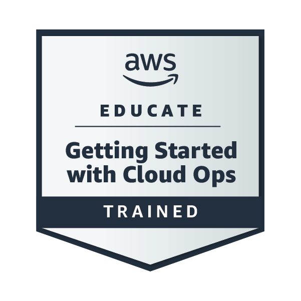

STUDENT LEADERSHIP
3rd Golden Sphere Awards
Executive Director’s List · Rank 5
Excellent Effort Award
06 / RECOGNITION ARCHIVE
A closer look at the awards, academic milestones, and credentials behind the work.
Back to the portfolio01 / AWARDS & MILESTONES
Select a recognition to view its story and additional photos.

Executive Director’s List · Rank 5
Excellent Effort Award

Recognized across the graduating BSIT groups at NU Bulacan.
B.S. Information Technology, NU Baliwag.

Alfredo M. Yao Innovation Awards · Philippine Chamber of Commerce and Industry.

Top 11 finalist · ASEAN-wide sustainability hackathon.

Finalist · Top 20 teams from 222 participants.

Built generative AI solutions for real-world organizational challenges using AWS cloud technologies.

Grantee · Academic scholarship at NU Baliwag.
02 / CERTIFICATIONS & BADGES
Credentials include issuer details and a direct verification link.
 HARVARD UNIVERSITY · VERIFIED
HARVARD UNIVERSITY · VERIFIED
Harvard’s introduction to computer science explores algorithms, data structures, programming, and computational thinking. The course develops problem-solving skills through hands-on programming assignments.
Verify certificate ↗︎
An introductory AWS Educate badge covering foundational cloud operations concepts and the AWS Well-Architected Framework. The credential introduces how cloud environments are operated and designed for reliability.
Verify badge ↗︎